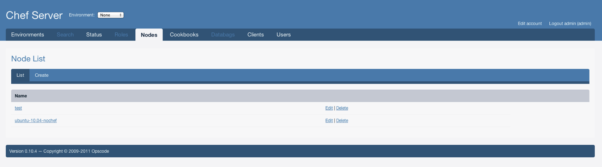
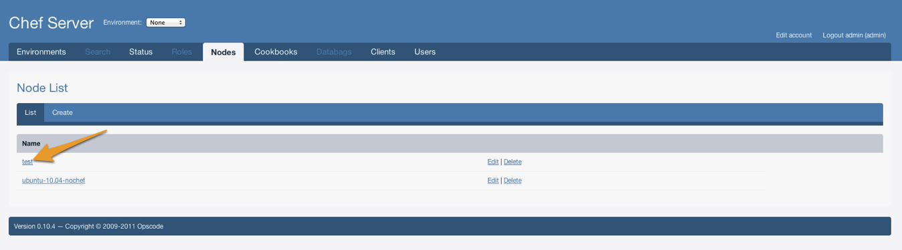
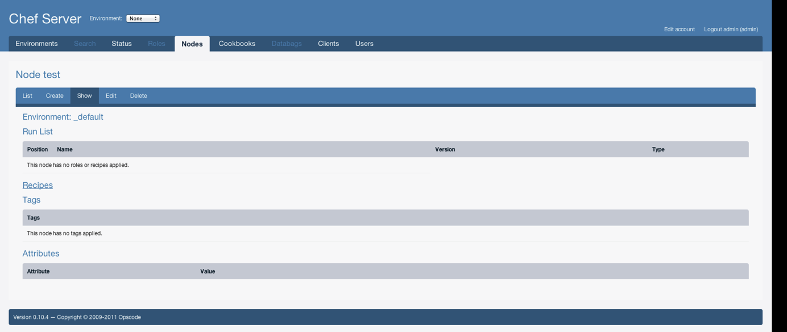
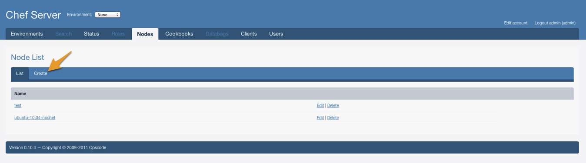
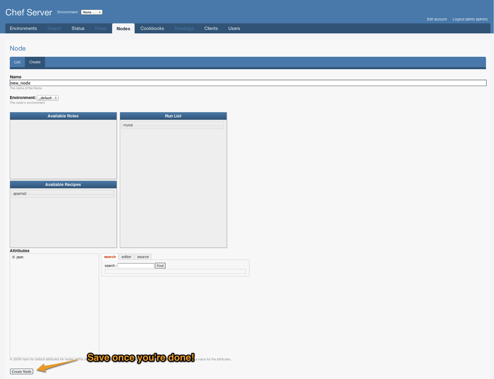
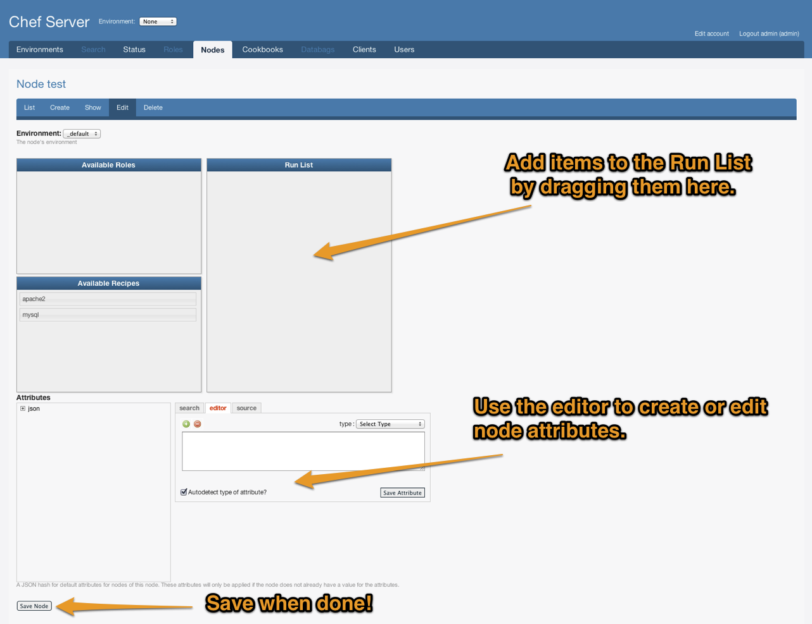
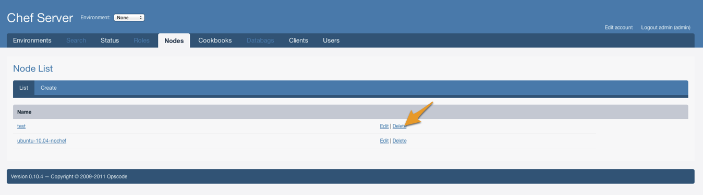
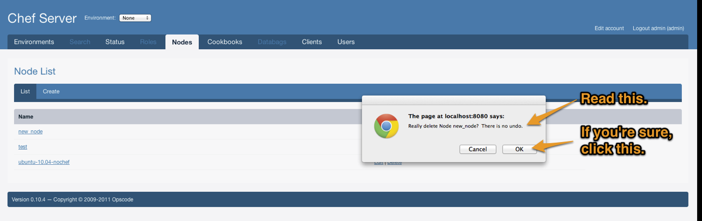

|
The Management Console allows users to create, read, update, and delete nodes.
Listing Nodes
In order to list nodes:
1. Log on to the Management Console.
2. Click Nodes on the main navigation menu.

Viewing a Node
Viewing a node shows the recipes and roles in the node's run list, as well as the node's attributes.
In order to view a specific node:
1. Login to the Management Console and navigate to the Nodes tab.
2. Click on the node you want to view.
On this page you can see the roles and recipes in the node's run list, as well as an expandable tree view of the JSON attributes on the node.


Creating a Node
The node creation page lists all available recipes and roles, and allows you to include these in the run list of the node you are creating. There is also a JSON editor for editing, adding and removing the node's attributes.
In order to create a node:
1. Login to the Management Console and navigate to the Nodes tab.
2. Click Create on the sub navigation bar.
3. Give the node a name.
4. Edit the node, as described in the next section. Continue with your normal edit steps and click "Create Node" to save the new node.


Editing a Node
NOTE: In any of the following actions where a drag is involved, you must drag the item to the lighter grey area of the target list.


Modifying the Node's Run List
1. To include a role in the run list of the node being edited, drag it from "Available Roles" to "Run List".
2. To include a recipe in the run list of node being edited, drag it from "Available Recipes" to "Run List".
3. To remove an included role or recipe from the node being edited, drag it from the "Run List" back to the respective "Available" section.
4. Click "Save Node" to save.
Modifying Node Attributes
To modify the attributes of a node, such that they override the values of the included recipe or role, click "json" from the "Default and Override Attributes" tree on the bottom left.
Using the Editor tab
Click the Editor tab on the right, click the green add button under the Editor tab, enter a name as the key and a body as the value and click "Add Attribute". The following figure shows the Default and Override Attributes tree and the JSON editor.

Using the Source tab
Enter the JSON body in the editor, and click the "Load JSON from source" button.
Click the Create Node or Save Node button to save the node. The following figure shows an example.

Deleting a Node
In order to delete a node:
1. Login to the Management Console and navigate to the Nodes tab.
2. Click the Delete link next to the name of the node you want to delete, and click OK on the confirmation message box. Or, click the link of the node to view its details, and click Delete on the sub navigation menu.
Note: You need delete permissions on the node to it. If you don't have permission, you may not see a Delete link or tab.


|


{kind=link}
{kind=link}
{kind=link}
{kind=link}
{kind=link}
{kind=link}
{kind=link}
{kind=link}
{kind=link}